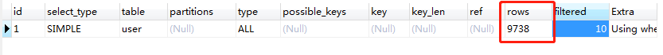
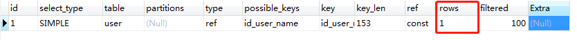

索引
MySQL官方对索引的定义为：索引（Index）是帮助MySQL高效获取数据的数据结构。
提取句子主干，就可以得到索引的本质：索引是数据结构。
1. 索引分类
在一个表中主键索引只能有一个，唯一索引可以有多个
- 主键索引 PRIMARY KEY
- 唯一的标识，主键不可重复
- 唯一索引 UNIQUE KEY
- 被唯一索引标识的列中的数据只能出现一次，一张表中可以标记多个列为唯一索引
- 一般用作不能重复的用户名、身份证号
- 常规索引 KEY
- 默认的、index、key关键字来设置
- 全文索引 FullText
- 在特定的数据库引擎下才有，MySAM
2. 索引的使用
为表添加索引
1. 在创建表的时候给字段增加索引
2. 创建完毕后，增加索引
1 | -- 方法1. 增加全文索引 - 索引名（列名） |
查看索引
1 | -- 显示student表所有的索引信息 |
分析sql
1 | -- 分析sql执行的状况 |
3. 分析sql执行的状况-全文索引-explain
索引在小数据量时，用处不大，但是大数据量时，区别十分明显
分析查询语句，查询无全文索引的phone
1 | EXPLAIN SELECT * FROM `user` WHERE `phone` = '12134521856' -- 执行时长0.014s |
结果可看出，结果为查询了9738条语句后得出的

分析查询语句，查询建有全文索引的name，首先发现查询时间少了非常多
1 | EXPLAIN SELECT * from `user` WHERE `name` = '用户9999' -- 执行时长0.003s |
结果可看出，建立全文索引后仅查询了一条数据

作用可类比为使用list和map存储数据
未建立索引时为使用list存储数据，当需要查询某条数据时，需要将list遍历，找到需要的数据将数据返回
建立索引可理解为使用map存储数据，key为索引列内容，当需要找某条数据时，可直接获取，不用遍历数据
4. 索引原则
- 索引不是越多越好
- 不要对经常变动的数据加索引
- 小数据量的表不需要加索引
- 索引一般加在常用来查询的字段上
索引的数据结构